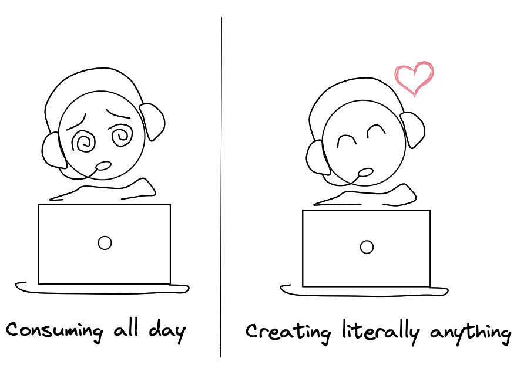

Creation = Satisfaction
7 Mar, 2023
I consume a lot of content -- podcasts, blog posts, videos, and books from time to time. Even though most of what I consume is informative & beneficial for me, it doesn't leave me satisfied at the end of the day - in fact, it makes me depressed if I do it continuously.
Ain't nothing is as satisfying as a good day of coding or writing or reflecting on what I learned with a friend.
I have been contemplating methods of creation that bring me joy, so I came up with this list of things I enjoy creating:
- Code - Writing a beautiful abstraction, refactoring something messy & chaotic to elegant & maintainable, coming up with a perfect name for a variable
- Blog posts - The whole process of coming up with an idea → Outlining what to write → Putting it all together → Rewriting
- Explaining what I learned to a friend (sort of like a non-recorded podcast)
Perfection trap
When it came to writing, the only thing that used to stop me was seeking perfection. I wanted the site I post it in, the topic, and even the length of the post to be perfect - that also meant nothing gets posted.
I built the simplest site without static site generators, and now I write whatever piques my interest at the given moment - this did the job of getting out of the trap!
